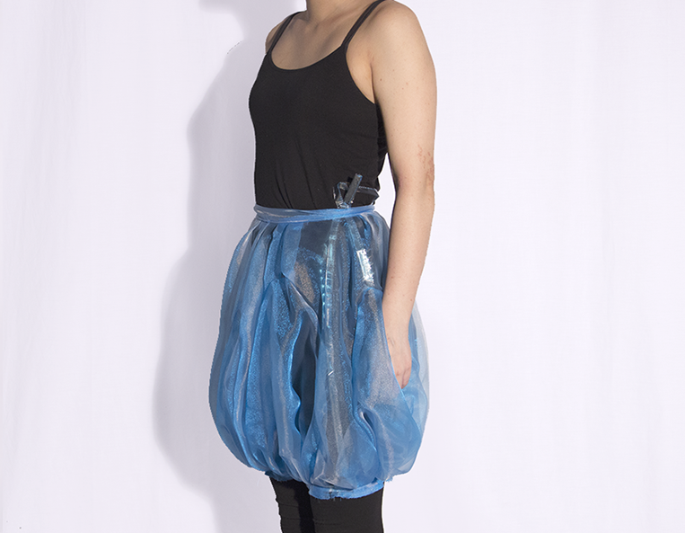
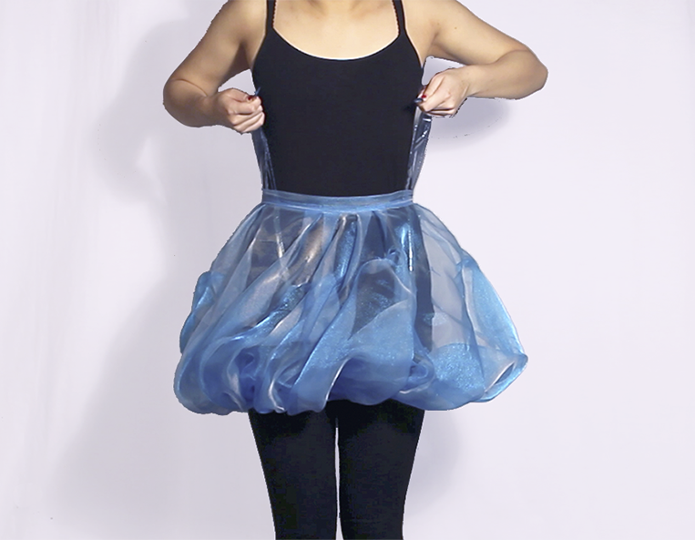
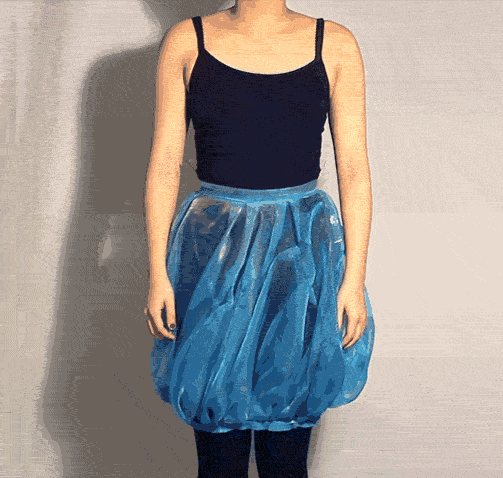

stasis
clothing serves basic utilitarian purposes but also influeces our emotions and well being and can become a form of defense. informed by proxemics and animal defense, my partner and i designed and built interactive wearables that allow wearers to express states of stress and social discomfort through non verbal, physical mechanisms inspired by the instinctual behaviors of the puffer fish and squid.
everyday we are faced with uncomfortable social situations. these stressful encounters develop into frustration and anxiety, as we often don’t address the source. whether it’s someone standing a little too close or initiating unwanted physical contact, these daily stresses become more taxing on the body and mind than a singular traumatic event.
by pulling on tabs, users increase their physical space and size, reiterating a need for breathing space, not unlike a puffer fish's defense mechanism.

giant squid emit ink in order to confuse predators. by pressing on a small packet to release phenolphthalein, the "ink", the vest turns a bright pink, similar to the warning coloration of poisonous animals, alerting those nearby of the user's current emotional state.

<< back